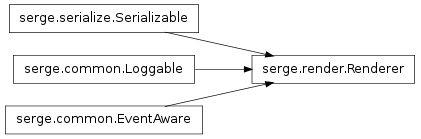
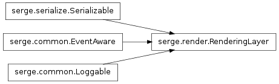
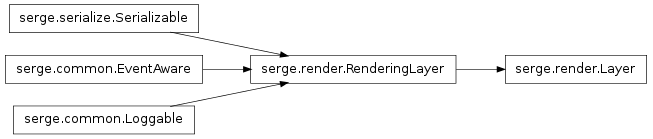
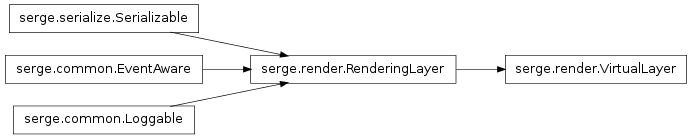
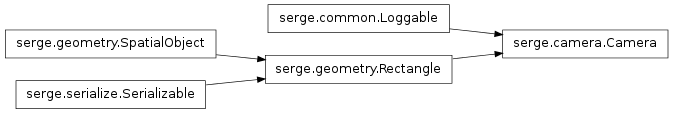

Bases: serge.common.Loggable, serge.serialize.Serializable, serge.common.EventAware
The main rendering component
Return the layer before the specified one in terms of rendering order
Return the order that a layer will be rendered in (0 = first)
Return a dictionary of the rendering orders of each layer by name ({name:0, name:1} etc)
The dictionary is actually a live copy that will be updated if you add layers to the renderer so it is safe for you to cache it and re-use it.
Changing the dictionary results in undefined behaviour.
Return the list of actors sorted by who should be processed first to correctly render
The actors are checked to see which layer they reside on and then this is used to order the returned list.

Bases: serge.common.Loggable, serge.serialize.Serializable, serge.common.EventAware
A layer on which to render things
This is the abstract version of the layer. Create subclasses of this to do useful things.

Bases: serge.render.RenderingLayer
A rendering layer with its own surface
This type of layer is useful for compositing because you can do things to this layer once it has been rendered (eg shadows, glows, blurs etc).

Bases: serge.render.RenderingLayer
A rendering layer that doesn’t have its own surface
This layer will render to the layer immediately before it in the rendering cycle.
Clear our surface
Nothing to do here - handled by the real owner of the surface.

Bases: serge.common.Loggable, serge.geometry.Rectangle
Represents a camera